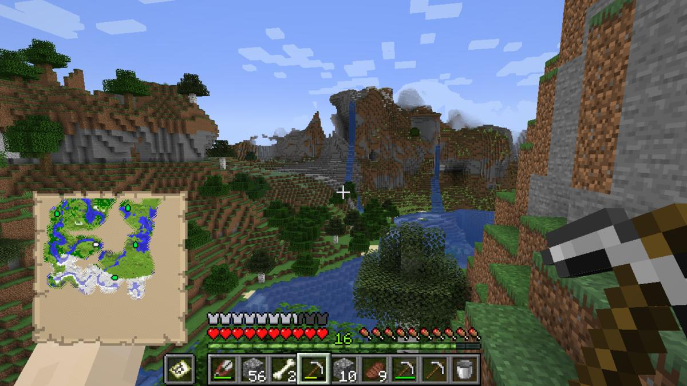
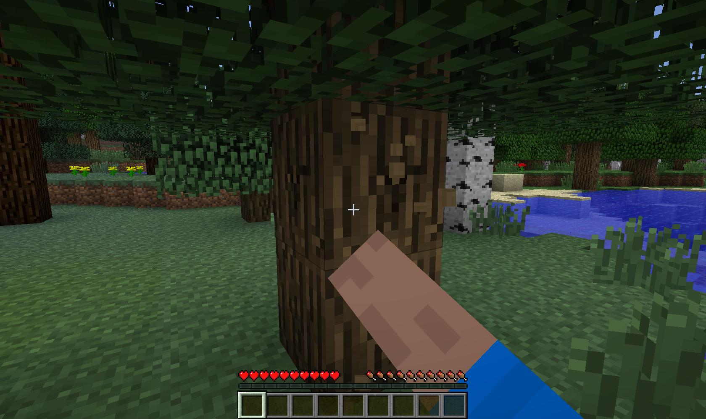
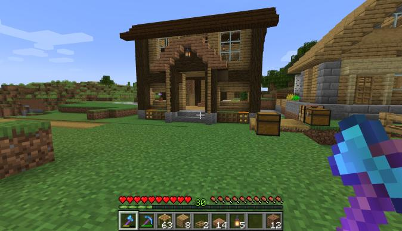
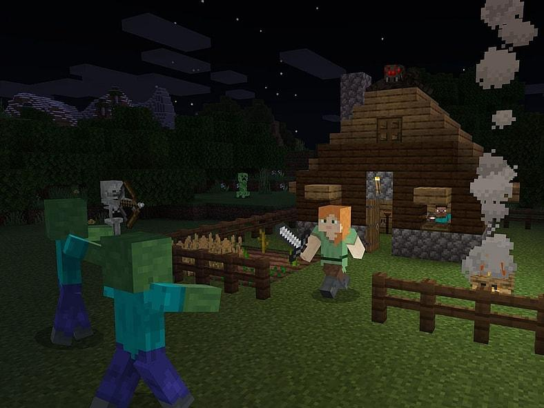

COMO FUNCIONA?

Exploração
O Minecraft possui um mundo aberto que pode ser explorado livremente pelo jogador. Durante a exploração, é possível encontrar diferentes biomas, animais, estruturas e recursos. O mundo é gerado de diferentes formas, fazendo com que cada partida possa apresentar lugares diferentes.

Coleta de recursos
Para progredir no jogo, o jogador precisa coletar recursos encontrados pelo mundo. Madeira, pedra, carvão, ferro e outros materiais podem ser obtidos ao quebrar determinados blocos. Esses recursos são utilizados para criar ferramentas, equipamentos e diversos outros itens.

Construção
A construção é um dos principais elementos do Minecraft. Os jogadores podem coletar blocos de diferentes materiais e utilizá-los para criar estruturas, casas, cidades e até máquinas complexas. A criatividade é incentivada, permitindo que os jogadores construam praticamente qualquer coisa que possam imaginar.

Sobrevivência
No modo Sobrevivência, o jogador precisa conseguir recursos para se manter no mundo e enfrentar os perigos que aparecem durante o jogo. Criaturas podem surgir principalmente durante a noite, sendo necessário utilizar ferramentas, armas e armaduras para se proteger.